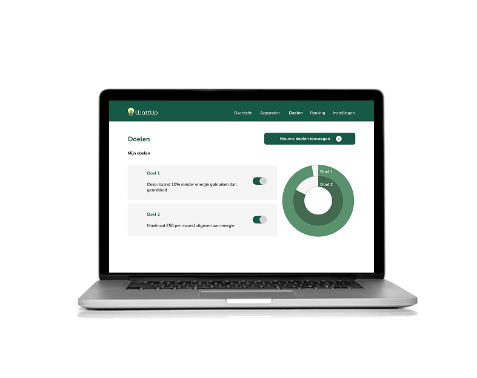
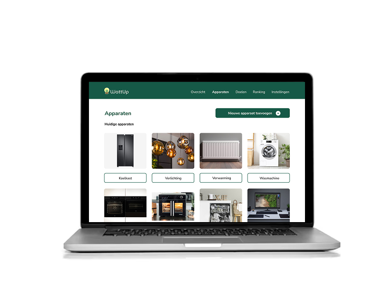
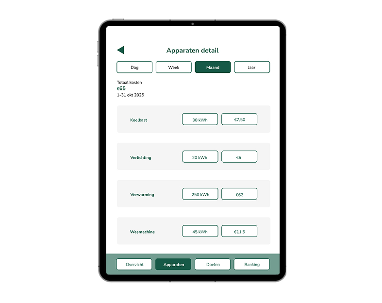
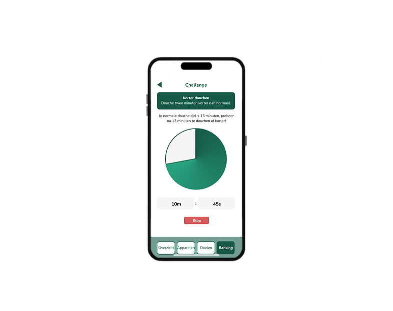

WattUp - Energy-Saving platform
Responsive Multi Device Design (Figma)
View screenflow ↗About this project
For the project Responsive Multi Device Design, I designed WattUp, a multi-device experience that helps users become more aware of their energy consumption and change their behaviour in a playful, meaningful way.
The concept focuses on everyday home contexts and uses different devices at the right moment: a laptop or desktop to explore energy usage and learn, a phone or smartwatch to receive quick notifications and perform small actions, and a tablet to review progress and see rewards at the end of the day.
The flow is designed around what users need before, during and after their activities: understanding where energy is wasted, getting timely nudges while moving through the house, and reflecting later with insights and small challenges. This makes the experience both educational and interactive.
I visualised the full solution in a screenflow, mapping how the product works across all devices and how the design stays consistent while still respecting each device’s strengths.
Preview



